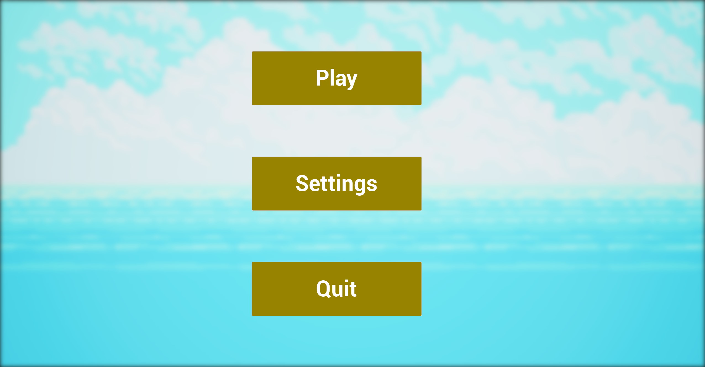

Ce jeu est mon premier test de jeu de platforme 2D sur Unreal Engine. Il m'a permis d'apprendre la créations des sprites et flipbook, la gestion des animations et la création des niveaux. J'ai aussi créé un menu d'options pour comprendre comment cela fonctionne avec ce moteur de jeu. Ainsi j'ai réalisé en quelques jours ce concept en partant de créations Pixel art 2D libre de droits et certaines personnels.
Menu
Quand il lance le jeu, le joueur arrive sur un menu principal que voici :
Depuis ce menu il peut lancer le jeu, accéder aux options et quitter le jeu. En lançant le jeu, il arrive directement dans le premier et seul niveau du prototype. En développant davantage le jeu, il y aurait pu y avoir ici un sélecteur de niveau.
Gameplay
Une fois le jeu lancé, le personnage, un petit renard apparait. Il tombe sur la première platforme du jeu. Le joueur est amené à aller vers la droite car c'est le seul endroit où il y a une surface. Des indications sont affichés sur fond pour que le joueur apprenne les touches qui lui serviront durant le jeu. C'est une manière assez basique de procédé mais qui permet aux plus novices de comprendre comment le jeu fonctionne tant il y a de touches sur un clavier.
On se rend rapidement compte en se déplaçant que la caméra nous suit, elle est accrochée au personnage principale avec un léger effet de lag pour plus de fluidité.